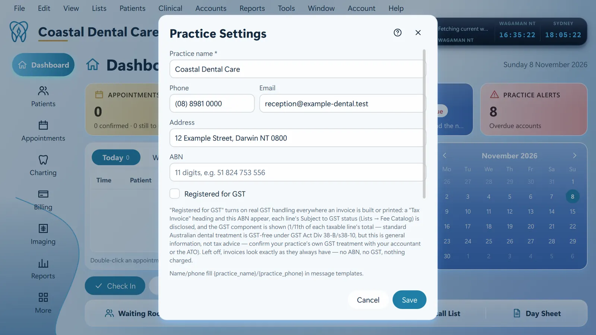
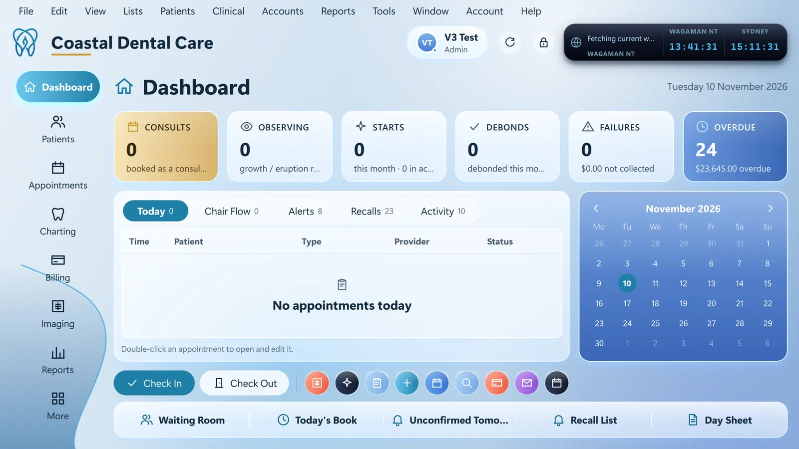
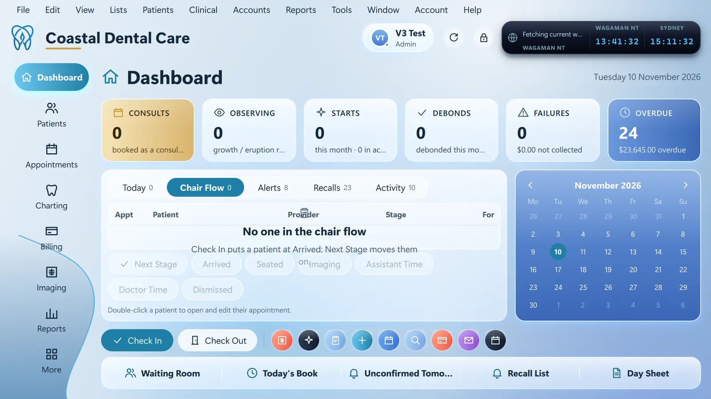

01 / 05 · Your orthodontic office
Choose Orthodontics once
Edit → Practice Settings → Practice type
Set the practice type to Orthodontics and DentaCore works the way an orthodontic office does, from the Dashboard to Billing.
- The Dashboard becomes the orthodontic Dashboard.
- Billing opens on Payment Plans, where the treatment contracts live.
- General-dental modules an ortho office doesn't use, such as perio charting and the implant tracker, switch off. Either can be switched back on.
- Appointment rows can be 5, 10 or 15 minutes for adjustment visits.
- Nothing is lost: switch the practice type back and the general dental screens return.

02 / 05 · Your orthodontic office
A dashboard built on starts and debonds
Dashboard
The first screen of the day shows how the orthodontic practice is going, not how many fillings are booked.
- Consultations today, and patients in observation waiting for the right time to start.
- Treatment starts and debonds this month, with how many patients are in active treatment and in retention.
- Failed drafts and overdue instalments on the treatment contracts.
- Today's chair flow and quick links to the screens an ortho team uses most.
- Each tile opens the list behind it.

03 / 05 · Your orthodontic office
An Appointment Book for adjustment days
Appointment Book
Adjustment clinics run on short appointments, so the book can too.
- Rows of 5, 10 or 15 minutes, by orthodontist or by chair.
- Appointment types for consultations, records, bonds, adjustments, debonds and retainer checks, each with its own length and colour.
- A cancellation waitlist fills a gap in one click, and online booking can take new consultations.
- Reminders go out by themselves, so the chairs stay full.

04 / 05 · Your orthodontic office
Chair flow for a busy clinic
Dashboard → Chair Flow
Follow every patient from the waiting room to the door.
- Arrived, Seated, Imaging, Assistant Time, Doctor Time and Dismissed, with how long each patient has been at each stage.
- Set up to eight stages of your own, in your order.
- The stage shows on the appointment in the book and in Chairside, so the orthodontist knows who's ready.
- Dismissed completes the appointment, the same as Check Out.

05 / 05 · Your orthodontic office
Chairs, rooms and the open bay
Lists → Rooms & Layout
Lay the clinic out as it really is, with every chair in the open bay and every room.
- Draw the rooms on the practice's own floor plan, or let DentaCore read them off it.
- Record what each room can do, such as photos, the OPG and the lateral ceph, so a records appointment lands where the equipment is.
- Book by chair as well as by orthodontist.